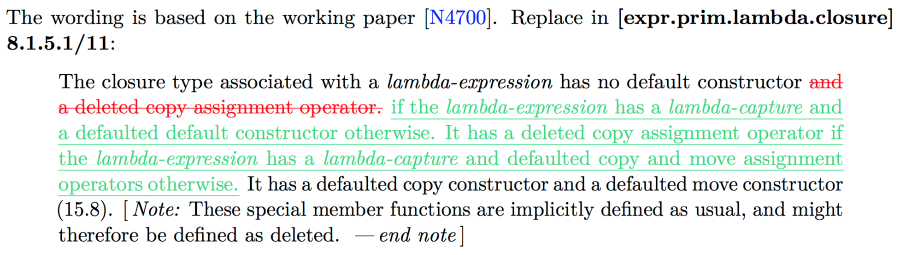

<!doctype html>
<html>
  <head>
    <meta charset="utf-8">
    <meta name="viewport" content="width=device-width, initial-scale=1.0, maximum-scale=1.0, user-scalable=no">

    <title>The object upside down</title>
    <meta name="author" content="Louis Dionne">

    <link rel="stylesheet" href="reveal/css/reveal.css">
    <link rel="stylesheet" href="reveal/css/theme/black.css">
    <link rel="stylesheet" href="custom.css">
    <link rel="stylesheet" href="line-numbers.css">

    <!-- Theme used for syntax highlighting of code -->
    <link rel="stylesheet" href="highlight-styles/vs2015.css">

    <!-- Printing and PDF exports -->
    <script>
      var link = document.createElement( 'link' );
      link.rel = 'stylesheet';
      link.type = 'text/css';
      link.href = window.location.search.match( /print-pdf/gi ) ? 'reveal/css/print/pdf.css' : 'reveal/css/print/paper.css';
      document.getElementsByTagName( 'head' )[0].appendChild( link );
    </script>
  </head>
  <body>
    <div class="reveal">
      <div class="slides">
        <section data-markdown=""
                 data-separator="^====+$"
                 data-separator-vertical="^----+$"
                 data-notes="^Note:">
        <script type="text/template">

## The object upside down
#### Louis Dionne, C++Now 2018

==============================================================================

### The problem

```c++
template <typename T>
void some_far_away_function() {
  T t{}; // I REALLY need a default-constructed instance of T
}

struct NoDefault {
  NoDefault() = delete;
};

some_far_away_function<NoDefault>(); // ERROR!
```

----

### Concretely...

```c++
template <typename Lambda, typename ...Args>
auto call(Args ...args) {
  return Lambda{}(args...);
}

auto add = [](int x, int y) { return x + y; };

call<decltype(add)>(1, 2); // ERROR!
```

----

### The lambda is stateless

WHY DOESN'T THIS WORK???

====

### A solution

<pre><code data-trim data-noescape class="lang-cpp line-numbers" data-highlight-lines="19">
template &lt;typename T>
struct empty_object {
  struct T1     { char m; };
  struct T2 : T { char m; };
  union Storage {
    Storage() : t1{} { }
    T1 t1;
    T2 t2;
  };
  static T get() {
    Storage storage{};
    char const* m = &storage.t2.m;
    T2 const* t2 = reinterpret_cast&lt;T2 const*>(m);
    T const* t = static_cast&lt;T const*>(t2);
    return *t;
  }
};

NoDefault muhahahahah = empty_object&lt;NoDefault>::get();</code></pre>

====

### Let's take one step at a time

----

<pre><code data-trim data-noescape class="lang-cpp line-numbers">
static_assert(std::is_standard_layout&lt;T&gt;{});
static_assert(std::is_empty&lt;T&gt;{});
static_assert(std::is_trivially_destructible&lt;T&gt;{});

struct T1     { char m; };
struct T2 : T { char m; };

static_assert(std::is_standard_layout&lt;T1&gt;{});
static_assert(std::is_standard_layout&lt;T2&gt;{});

static_assert(!std::is_union&lt;T1&gt;{});
static_assert(!std::is_union&lt;T2&gt;{});

static_assert(std::is_class&lt;T1&gt;{});
static_assert(std::is_class&lt;T2&gt;{});</code></pre>

----

### Observation 1

<blockquote style="width:100%;"><p>
Two standard-layout non-union class types may have a common initial
sequence of non-static data members and bit-fields, for a sequence of
one or more initial members (in order of declaration), if the members
have layout-compatible types [...].
</p></blockquote>

Hence, `T1` and `T2` have `m` as a common initial sequence of non-static data members.

----

### Observation 2

<blockquote style="width:100%;"><p>
Two standard-layout non-union class types are called layout-compatible
if [...] their common initial sequence consists of every non-static
data member and bit field.
</p></blockquote>

Hence, `T1` and `T2` are layout-compatible.

----

<pre><code data-trim data-noescape class="lang-cpp line-numbers" data-highlight-lines="5,11">
struct T1     { char m; };
struct T2 : T { char m; };

union Storage {
  Storage() : t1{} { }
  T1 t1;
  T2 t2;
};

static T get() {
  Storage storage{};
  char const* m = &storage.t2.m;
  T2 const* t2 = reinterpret_cast&lt;T2 const*>(m);
  T const* t = static_cast&lt;T const*>(t2);
  return *t;
}</code></pre>

----

<pre><code data-trim data-noescape class="lang-cpp line-numbers" data-highlight-lines="12">
struct T1     { char m; };
struct T2 : T { char m; };

union Storage {
  Storage() : t1{} { }
  T1 t1;
  T2 t2;
};

static T get() {
  Storage storage{};
  char const* m = &storage.t2.m;
  T2 const* t2 = reinterpret_cast&lt;T2 const*>(m);
  T const* t = static_cast&lt;T const*>(t2);
  return *t;
}</code></pre>

----

### Yep, that's legal

<blockquote style="width:100%;"><p>
In a standard-layout union with an active member of non-union class
type `T1`, it is permitted to read a non-static data member `m` of
another union member of non-union class type `T2` provided `m` is
part of the common initial sequence of `T1` and `T2` [...].
</p></blockquote>

----

<pre><code data-trim data-noescape class="lang-cpp line-numbers" data-highlight-lines="13">
struct T1     { char m; };
struct T2 : T { char m; };

union Storage {
  Storage() : t1{} { }
  T1 t1;
  T2 t2;
};

static T get() {
  Storage storage{};
  char const* m = &storage.t2.m;
  T2 const* t2 = reinterpret_cast&lt;T2 const*>(m);
  T const* t = static_cast&lt;T const*>(t2);
  return *t;
}</code></pre>

----

### That's legal too

<blockquote style="width:100%;"><p>
A pointer to an object of standard-layout struct type can be
`reinterpret_cast` to pointer to its first non-static data member [...],
and vice versa. [...]
</p></blockquote>

----

<pre><code data-trim data-noescape class="lang-cpp line-numbers" data-highlight-lines="14">
struct T1     { char m; };
struct T2 : T { char m; };

union Storage {
  Storage() : t1{} { }
  T1 t1;
  T2 t2;
};

static T get() {
  Storage storage{};
  char const* m = &storage.t2.m;
  T2 const* t2 = reinterpret_cast&lt;T2 const*>(m);
  T const* t = static_cast&lt;T const*>(t2);
  return *t;
}</code></pre>

----

### Now, this works!

```c++
template <typename Lambda, typename ...Args>
auto call(Args ...args) {
  Lambda lambda = empty_object<Lambda>::get();
  return lambda(args...);
}

auto add = [](int x, int y) { return x + y; };

call<decltype(add)>(1, 2); // yay!
```

====

### But really...


----

### [p0624r2](http://www.open-std.org/jtc1/sc22/wg21/docs/papers/2017/p0624r2.pdf)



----

### In C++20, this works!

```c++
template <typename Lambda, typename ...Args>
auto call(Args ...args) {
  Lambda lambda{}; // OK in C++20
  return lambda(args...);
}

auto add = [](int x, int y) { return x + y; };

call<decltype(add)>(1, 2);
```

==============================================================================

### Thank you

https://ldionne.com

        </script>
        </section>
      </div>
    </div>

    <script src="js/jquery-3.2.1.min.js"></script>
    <script src="reveal/js/reveal.js"></script>
    <script src="reveal/lib/js/head.min.js"></script>

    <script>
      Reveal.initialize({
        slideNumber: 'c', // 'c/t' -> useful when authoring to know how many slides there are
        history: true,
        transition: 'none',

        dependencies: [
          { src: 'reveal/plugin/markdown/marked.js' },
          { src: 'reveal/plugin/markdown/markdown.js' },
          { src: 'reveal/plugin/notes/notes.js', async: true },
          { src: 'reveal/plugin/highlight/highlight.js', async: true, callback: function() { hljs.initHighlightingOnLoad(); } },
          { src: 'line-numbers.js' }
        ]
      });
    </script>
  </body>
</html>
